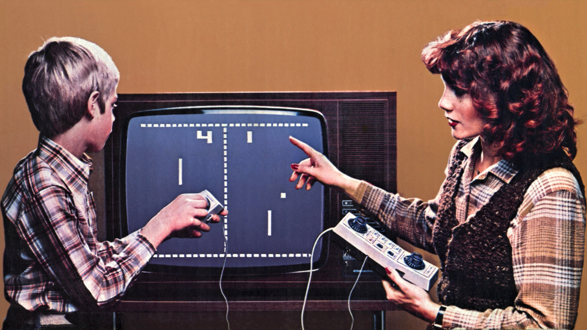
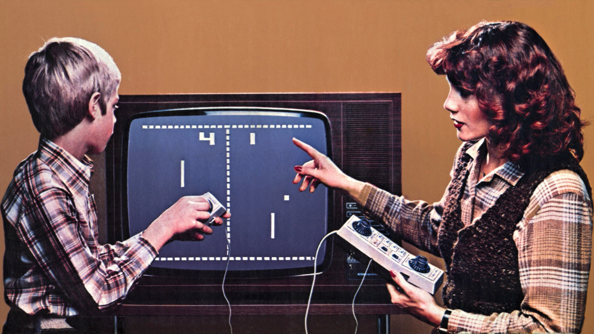
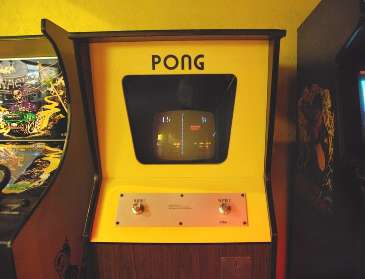
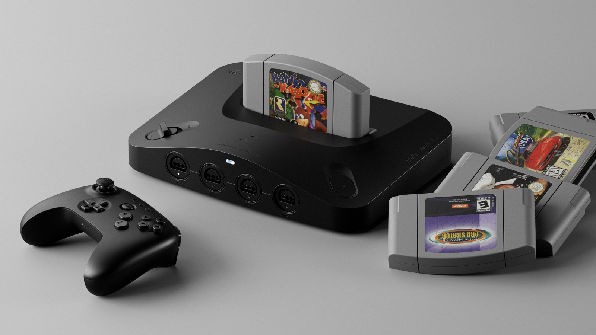
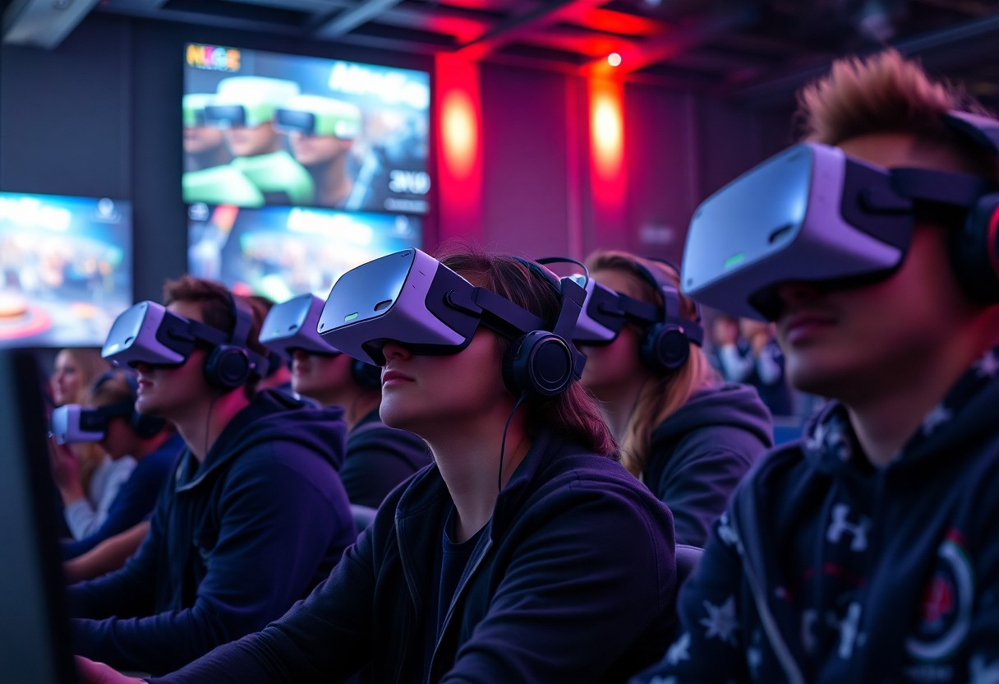

1950s
Early experiments with computer games, such as tic-tac-toe and simple simulations.
A brief timeline highlighting major milestones in video gaming history.
Early experiments with computer games, such as tic-tac-toe and simple simulations.
Release of Pong, one of the first commercially successful arcade games.
Home console boom: Atari, NES, and the rise of iconic franchises.

3D graphics revolution: PlayStation, Nintendo 64, and online gaming beginnings.
Massive multiplayer online games (MMOs) gain popularity, eSports emerge.

Mobile gaming boom, streaming platforms like Twitch popularize gaming culture.
Cloud gaming, virtual reality (VR), and competitive eSports dominate globally.
